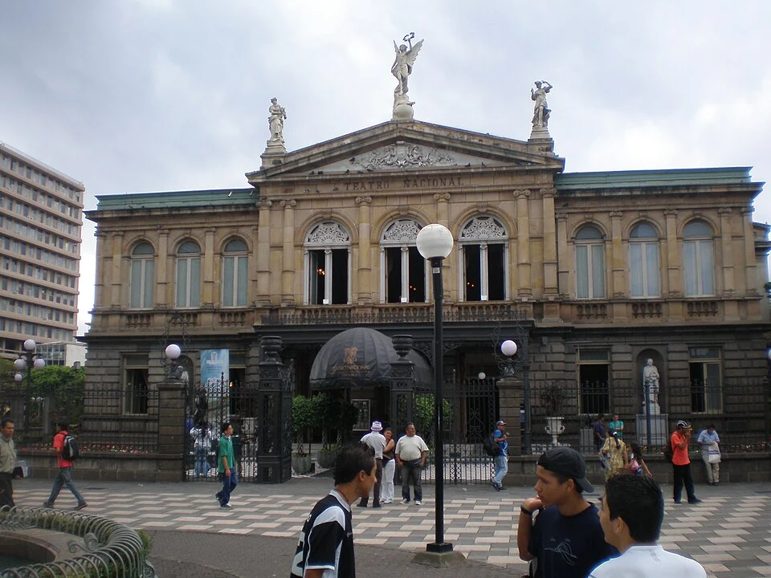

Сан-Хосе: театр и музеи
Национальный театр, Музей доколумбова золота и Национальный музей знакомят с историей и культурой Коста-Рики. На один день удобно выбрать театр и один из музеев.
Подробнее
Начните с Национального театра, затем выберите Музей доколумбова золота или Национальный музей. В театре на экскурсии можно осмотреть интерьеры, а в музеях — узнать о культуре и истории страны. Между посещениями удобно гулять по центру пешком.
Билеты и бронирование
У театра и музеев отдельные билеты и расписания. Для Национального музея обычная индивидуальная экскурсия с гидом не является обязательной; стандартный билет можно купить на месте. Для машины выбирайте отдельную городскую парковку.
Городская прогулка; специальный хайкинг не нужен. Выберите 1–2 музея, а не все сразу.
Машина до охраняемой парковки или такси; центр удобнее обходить пешком. Метка — Национальный театр.
Сан-Хосе
Национальный театр, Музей доколумбова золота и Национальный музей знакомят с историей и культурой Коста-Рики.